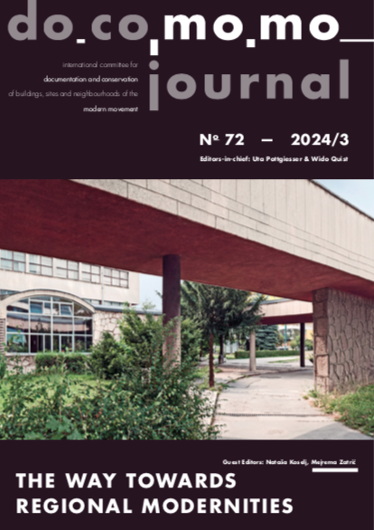
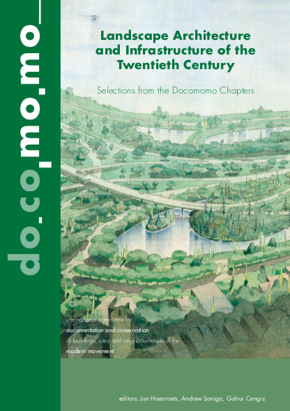
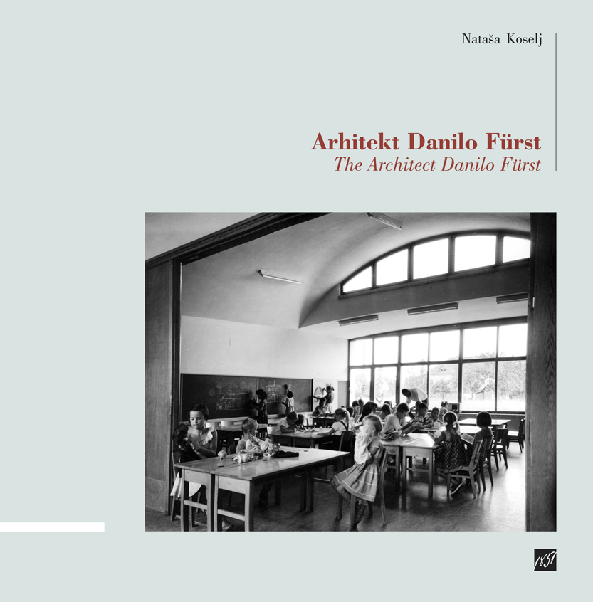
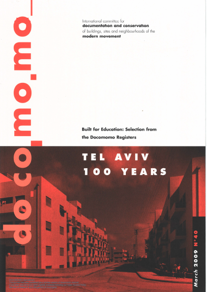
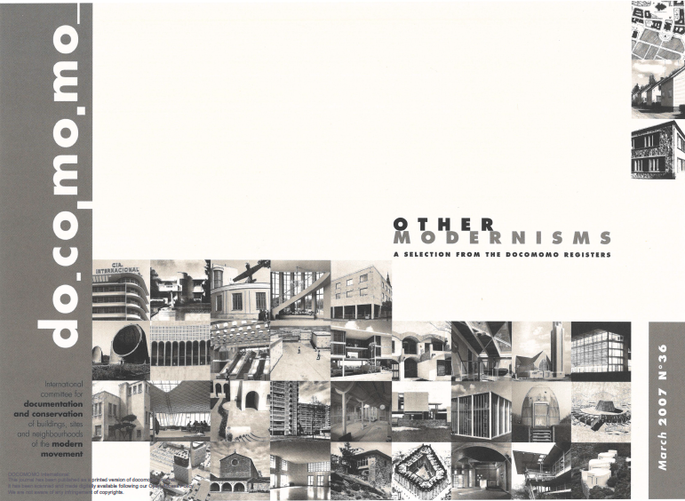

Docomomo Journal No. 72 (2024)
THE WAY TOWARDS REGIONAL MODERNITIES
Predstavitev dela arhitektov Dušana Grabrijana in Juraja
Neidhardta. Njuno prijateljstvo in sodelovanje je ključno
zaznamovalo razvoj moderne arhitekture v 20. stoletju na ozemlju
bivše Jugoslavije. S prispevki sodelujejo avtorji iz Slovenije,
Hrvaške, Bosne in Hercegovine, Srbije in Makedonije.
splet: docomomojournal.com
prenos: PDF

Landscape Architecture and Infrastructure of the Twentieth Century (2024)
Krajinska arhitektura in infrastruktura dvajsetega stoletja predstavljata široko paleto krajin, ki so bile sestavni del modernega gibanja. Cilj publikacije Landscape Architecture and Infrastructure of the Twentieth Century – Selections from the Docomomo Chapters je povečati zavedanje o pomenu oblikovanja teh krajin in razširiti razumevanje njihove raznolikosti.
DOI: doi.org/10.52200/docomomo.books.01
prenos: PDF

MONOGRAFIJA ARHITEKT DANILO FUERST avtorice dr. Nataše Koselj predstavlja enega najpomembnejših slovenskih modernističnih arhitektov 20. stoletja, ki je bil Plečnikov učenec in je odigral pionirsko vlogo na področju montažne gradnje stanovanj in sodobnega šolskega koncepta. Dr. Nataša Koselj je za monografijo l. 2014 prejela Plečnikovo medaljo. Izšla je v slovenskem in angleškem jeziku pri Celjski Mohorjevi družbi.
naročanje: knjigarna-lj@celjska-mohorjeva.si
Arhitekt Danilo Furst - Vodnik po arhitekturi - Bled z okolico - Prenos datetke PDF

Atlas Ravnikar je prvi vodnik po arhitekturi Edvarda Ravnikarja. Izšel je ob 100. obletnici Ravnikarjevega rojstva l. 2007, v založbi Docomomo Slovenija, v slovenskem in angleškem jeziku. Vsebuje seznam vseh Ravnikarjevih izvedenih in neizvedenih del, kratko biografijo in značilnosti njegovega ustvarjanja ter številne Ravnikarjeve misli o arhitekturnem ustvarjanju. Vsebuje tudi zemljevide z lokacijami izvedenih in neizvedenih projektov.
prenos: Del A/Part A, Del B/Part B

Docomomo Slovenia_100 je znanstvena monografija, ki je izšla v koprodukciji Docomomo Slovenija in revije ab leta 2010 v slovenskem in angleškem jeziku. Uvodnim člankom priznanih slovenskih strokovnjakov s področja arhitekturne zgodovine sledi katalog 100. del slovenske moderne arhitekture 20. stoletja (1900-1980), na koncu so seznami razporeditev glede na avtorja, tipologijo in regijo. Izbor del temelji na Docomomovih kriterijih vrednotenja in selekcije, ki se začenja po secesiji in končuje s 30 letno distanco.
cena: 45 €
naročanje:
Knjigarna Buča

Plakat Docomomo Slovenia_100 v velikosti 48 x 68 cm vsebuje izbor 100. arhitekturnih del slovenske arhitekture, nastalih med 1900 in 1980, ki so predstavljene v monografiji Docomomo Slovenija_100. Poleg fotografije je ime objekta v slovenskem in angleškem jeziku, naslov, letnica nastanka in ime arhitekta, z letnicami rojstva in smrti. V oranžni barvi pod fotografijo je ponazorjen status spomeniško varstvene zaščite objekta v letu 2010.
prenos: PDF

Docomomo Journal No. 40: BUILT FOR EDUCATION - A selection from the Docomomo Registers, 2009
prenos: PDF

Docomomo Journal No. 36: OTHER MODERNISMS - A selection from the Docomomo Registers, 2007
prenos: PDF